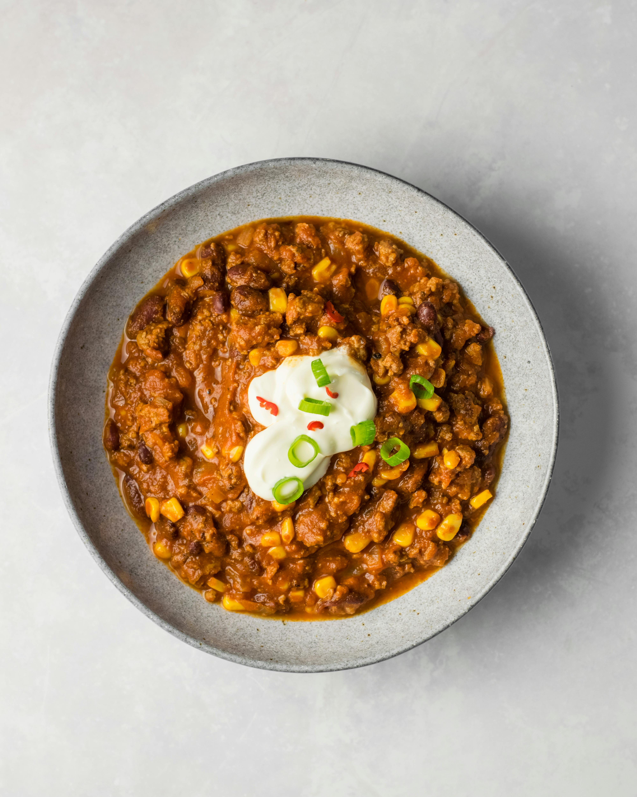

Black bean chili is a hearty,, often vegetarian or vegan, one-pot dish featuring a base of simmered black beans, tomatoes, and aromatic spices like cumin, chili powder, and smoky paprika. It is often enhanced with onions, bell peppers, garlic, and sometimes sweet potatoes or corn, offering a thick, nutritious, and mildly spicy flavor.
Black bean chili is a hearty, usually vegetarian dish made with black beans, onions, garlic, and diced tomatoes (or tomato paste), seasoned with chili powder, cumin, and smoked paprika. Key additions often include vegetable broth, bell peppers, corn, and toppings like avocado, lime, and cilantro.